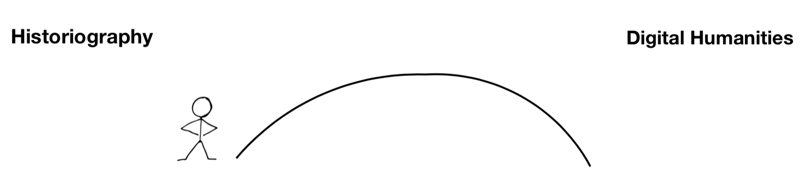
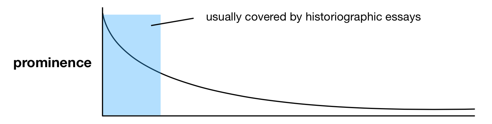
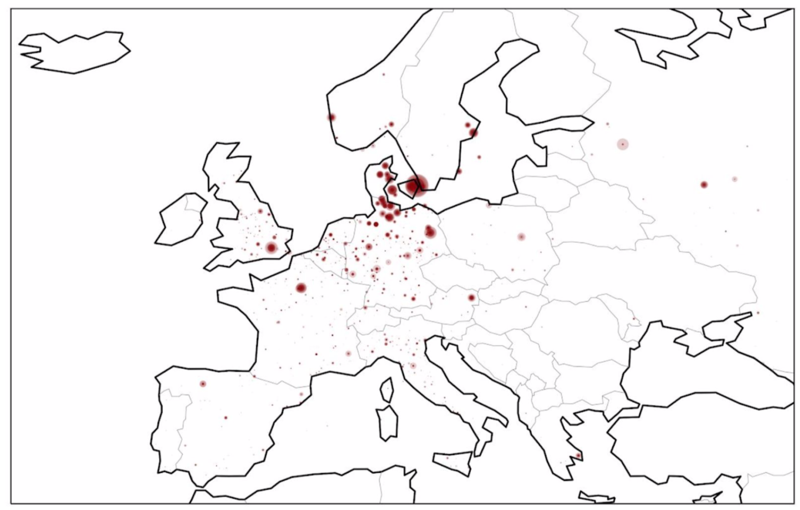

Renewal, Silences and Computational Tools in History
In this project, I looked at how historians write about the history of their discipline. In history, the practice of working with the history of the history of something is referred to as historiography.
Project Outcomes:
- An analysis of the format of the historiographical essay
- A new term: Digital Historiography
- A case study
One of the aims of this project was to build a bridge between historiography and the parts of the humaities which already engages with digital or computational tools.

In the second part of my project, I explore how digital tools might augment the research process. The most appealing reason for me is how historiography can be debiased and renewed by scrutinizing and probing the discipline with digital tools and methodologies. With digital historiography we can include the long tail of research which never becomes part of the mainstream historiographical conscious.

Computational tools allow historians to consider thousands of sources, they could be texts, images, or other kinds of media, when they do their analysis: something which would be near impossible without the use of computers. If historians can devise computational analysis’ which generate valuable insights into sources, they are no longer limited to working only with the most prominent works within a field.
In the third, and last, part of my project I tried to provide a case study showing what a digital historiography project might look like. I decided to do a spatial analysis of the writings of Danish historians. Below is one of the visualisations I produced to describe which places Danish historians have written about during the past 150 years.
